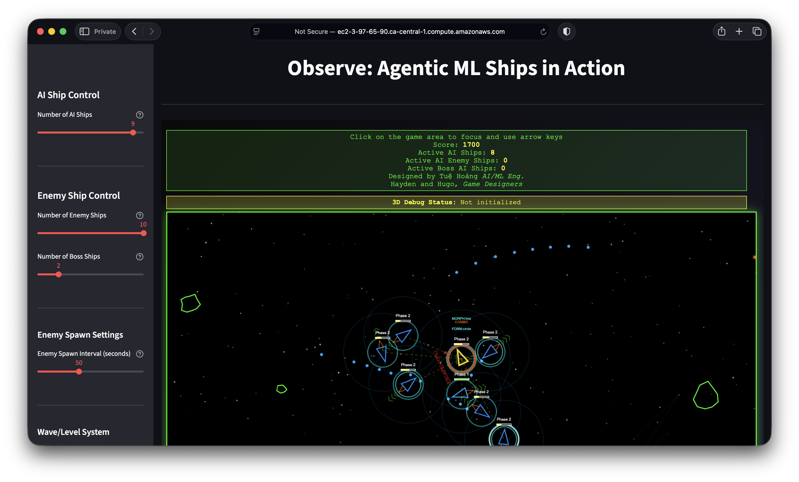
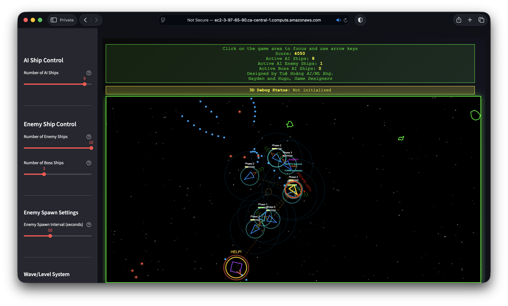
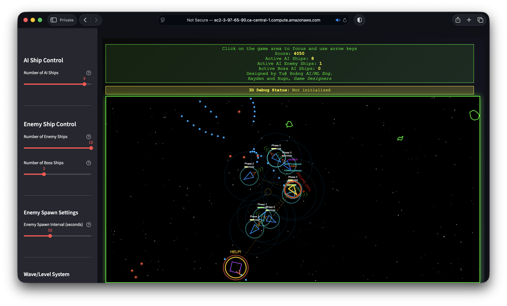
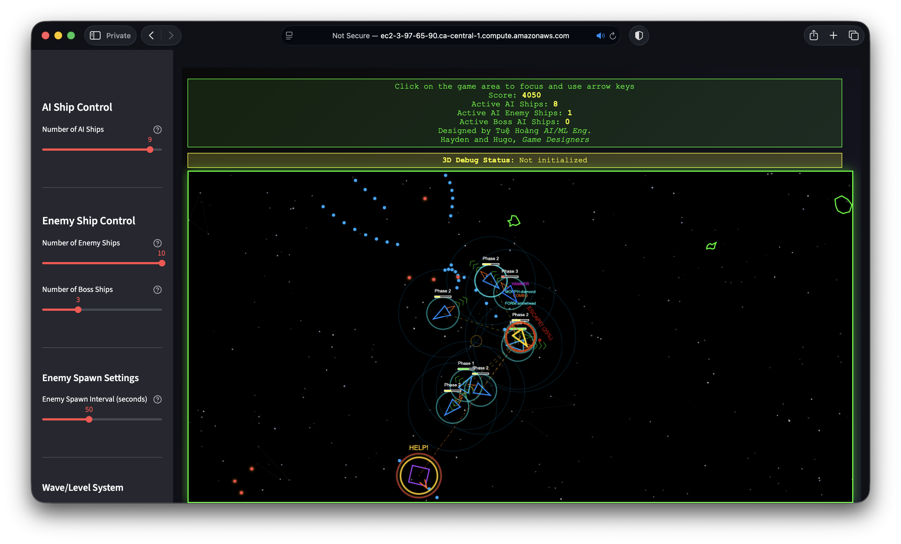

We reimagine the arcade classic as a living environment—where intelligent agents learn, coordinate, and adapt through play. Multiple AI ships form tactical formations, execute alpha attacks, and evolve their strategies in real time.
Adaptive NPCs, self-improving opponents, and AI-assisted mechanics. Asteroids as a testbed for decision-making, control, and emergent behavior.
From pixel-based gameplay to modern simulators, Neuro Gaming Lab explores how learning agents master, modify, and meaningfully interact with games. Reviving the past to build the future of playable AI.
Features
- Triangular ship with momentum, triple-barrel gun, shield, hyperspace
- AI-controlled ships — health, shield, phases, flocking, combat
- ML integration — parameter tuning, priority weights, full decision-making
- Alpha Attack — formations (Arrowhead, Line, Circle, Diamond, Wedge), roles, flanking
- Enemy system — Basic, Advanced (tactical), and Boss (phases, special abilities)
- Asteroids, collision detection, score tracking, retro green-on-black theme
Screenshots

 


Listen
Neuro-Asteroids-ML-Agentic-Ships — Arcade Classics